plant it
Dry climate
It might be hard to plant in dry climate due to the climate challenges that make it hard for plants to survive
however, with some tips and advices and maybe a little bit of knowledge you will manage to plant your favorite plants and enjoy watching them grow.
First, you need to know the nature of the climate area that you live in to find out the best plants to grow/plant.
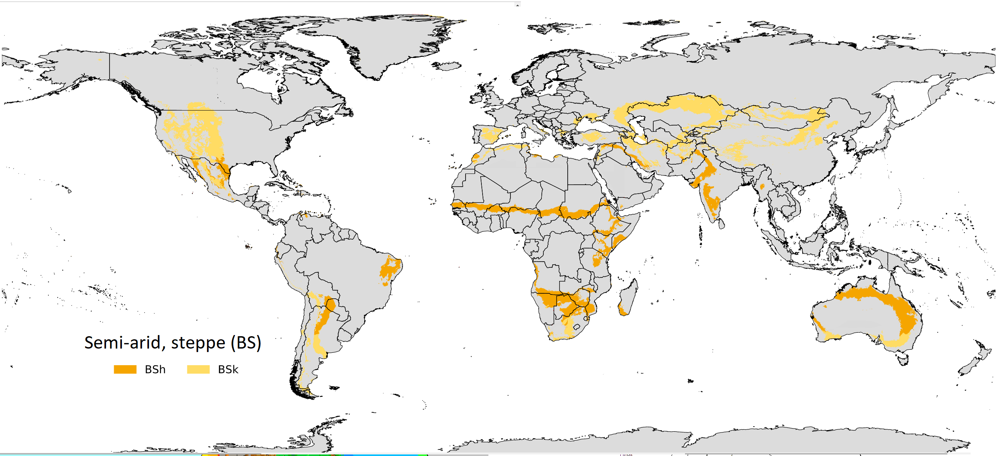
Dry Climate - Introduction:
These climates are characterized by the fact that precipitation is less than potential evapotranspiration. Desert areas, situated along the west coasts of continents at tropical or near-tropical locations, are characterized by cooler temperatures than encountered elsewhere at comparable latitudes (due to the nearby presence of cold ocean currents) and frequent fog and low clouds, despite the fact that these places rank among the driest on earth in terms of actual precipitation received.
In this climate, summers are hot to very hot and it seldom rains. Winter days may be cool or warm, and winter nights can be very cold. The air is dry, there is little cloud; sunshine is intense and glare can be a problem. There is a big temperature difference between day and night.
Environmental factors:
- Identifying the different environmental areas and their climatic properties:
- The breadth of the interior deserts.
- Spread of sand dunes.
- Temperatures rise above 45°C in summer.
- Drought, thirst, lack of rain water, springs and wells.
- Very low humidity.
- Soil fertility decline.
- Increase of salt content in the soil and its lack of organic matter.
- Wind speed which cause dust leading to sand storms.
- Identifying plants according to climatic and land factors (soil):
Climatic factors:
- High temperature tolerant plants.
- Phoenix dactylifera
- Albizia lebbek
- Nerium oleander
- Dodonea viscosa
- Cupressus spp
- Casuarina spp
- Azadirachta indica
- Washingtunia filifera
- Olea europaea
- Low temperature tolerant plants
- Tamarix spp
- Nerium oleander
- Cupressus spp
- Pinus spp
- Rosa spp
- Thuja orientalis
- Acacia tortilis
- Olea europaea
- Fumes and dust resistant plants.
- Drought and thirst resistant plants.
- Tamarix spp
- Ipomea palmata
- Nerium oleander
- Cupressus spp
- Casuarina spp
- Albizia lebbek
- Phoenix dactylifera
- Washingtunia filifera
- Azadirachta indica
- Pinus spp
- Olea europaea
- Plants that tolerate Variations of weather and wind.
- Plants that tolerate offshore wind and salinity near seacoasts.
Land and soil factors:
- Plants suitable for cultivation in light sandy soil.
- Plants suitable for cultivation in heavy soil
- Alkaline tolerant plants
- plants tolerant to limestone soil
- Plants suitable for cultivation in shallow soil
- Plants suitable for cultivation in gravelly soil.
They include local plants or plants that have been introduced since many years to the region and adapted to the environmental conditions in which they are grown, particularly in terms of temperature changes and other climatic factors.
Soil varies according to the proportion of its particles composition , which is sand, silt and clay. Light soil contains a high proportion of sand and is poor in nutrients and does not retain water or nutrients for a long time
Soils with a high content of sand are poor in nutrients and do not retain water or nutrients for a long time. These soils are usually suitable for plants with thin roots that can go deeper into the ground
Soils with a high content of clay particles and retain sufficient moisture. Plants with shallow roots that require homogeneous soil moisture throughout the year are grown in these lands.
Soils rich in sodium carbonate and bicarbonate. These are plants that tolerate excess alkalinity in the soil due to the presence of some alkaline elements that accumulate on the surface due to poor drainage in the soil, and work should therefore be done to improve drainage in the soil where the plants are grown.
Soils with a high content of calcium carbonate.There are special types of plants that adapt to and grow successfully in limestone soils.
Soils with little depth due to the presence of subsurface layers of rock. Some plants send their roots horizontally to grow in the surface layer of the soil and
These plants are characterized by the ability of their roots to infiltrate and search for soft areas between gravel and stones to run through them and fix the plant in soil as well as to take their needs of moisture and nutrients.
Plants
Palm trees
Conical needle-leaf trees
Broad-leaved trees
Fruit trees
Shrubs
Climbers
Plant name : Phoenix dactylifera
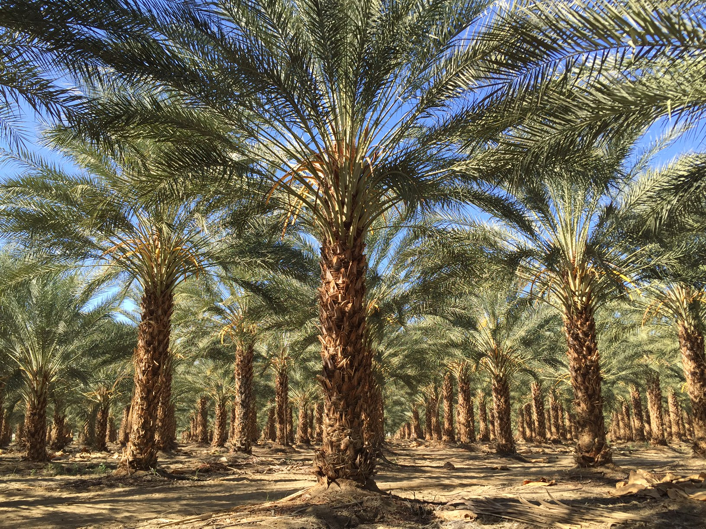Plant Description:
It withstands extreme environmental factors as it can withstand temperature rise to 50 degrees Celsius, but not frost. It also withstands drought, wind and salinity .It is suitable for cultivation in light sandy soil .However, it is vulnerable to some diseases and insects such as Rhynchophorus ferrugineus, Coccoidea, Zeuzera pyrina and Acarus.
Plant name : Washingtonia filifera
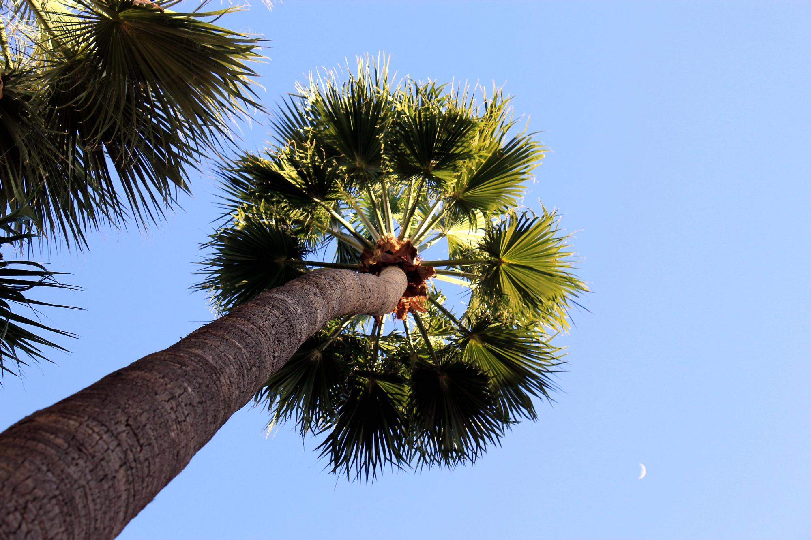Plant Description:
It withstands extreme environmental factors well in terms of temperature rise to 47 degrees Celsius but not frost. It also withstands drought, wind and salinity.
Plant name: Cupressus sempervirens (Var. pyramidalis or horizontalis)

Plant Description:
It withstands extreme environmental factors well in terms of temperature rise to 45 degrees Celsius or frost as well as drought and wind, but it has low tolerance for salinity.
Plant name: Tamarix aphylla

Plant Description:
It withstands extreme environmental factors in terms of temperature rise to 50 degrees Celsius and frost. It also withstands drought and wind, and its tolerance for salinity is very high. It is vulnerable to creatures that eat cambium and internal bark leading to swellings on branches and twigs. It is also vulnerable to Isoptera.
Plant name: Acacia farnesiana
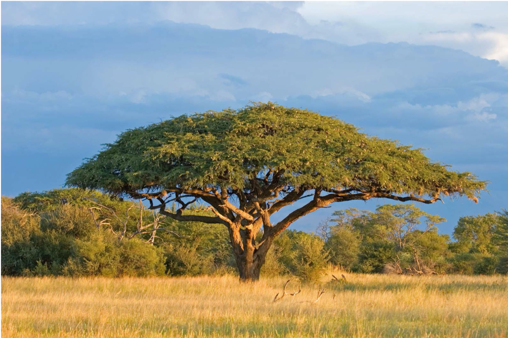Plant Description:
It withstands rise temperatures to 47 degrees Celsius and reduction of temperatures to frost, as well as drought and wind, and it has high tolerance for salinity. It is vulnerable to Agromyzidae, Panonychus citri and Pseudococcidae.
Plant name: Acacia tortilis
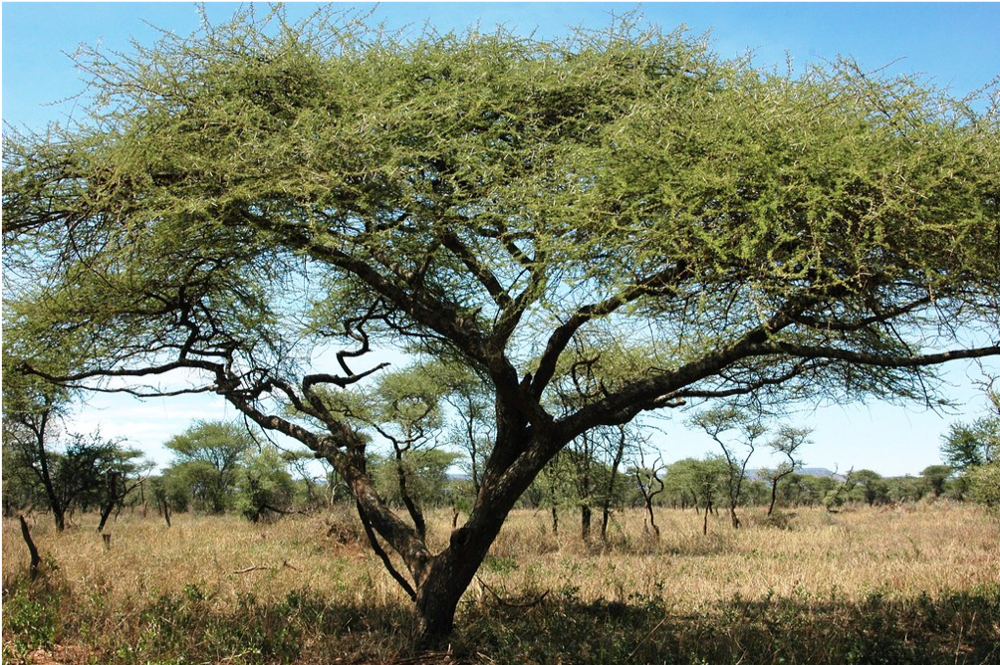Plant Description:
It withstands rise temperatures to 47 degrees Celsius and reduction of temperatures to frost, as well as drought and wind, and it has high tolerance for salinity. It is vulnerable to Panonychus citri and Pseudococcidae
Plant name: Albizia lebbek
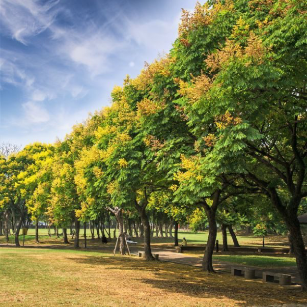Plant Description:
It withstands rise temperatures to 47 degrees Celsius but not frost. It also withstands drought and salinity. However, it has low tolerance for winds since it needs support.
Plant name: Azadirachta indica
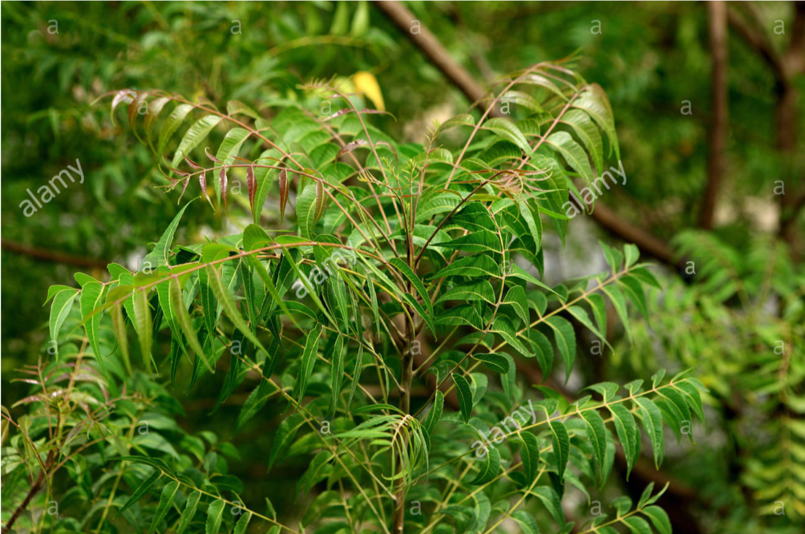Plant Description:
It withstands rise temperatures to 46 degrees Celsius but not frost. It also withstands drought and wind, but has moderate tolerance for salinity.
Plant name: Olea europaea
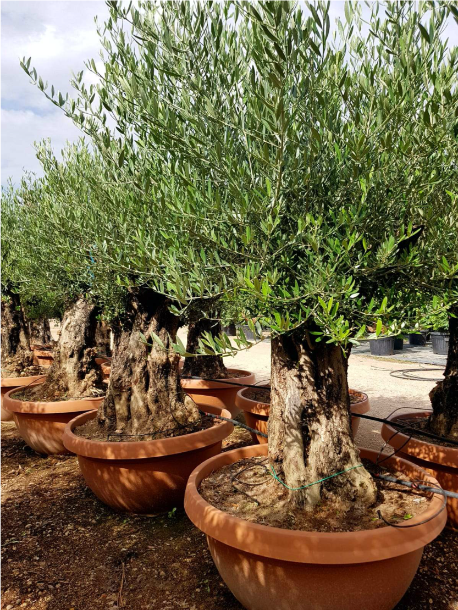Plant Description:
It withstands extreme environmental factors, especially rise temperature to 47 degrees Celsius as well as drought and wind, and it also has good tolerance for salinity
Plant name: Euphorbia pulcherrima
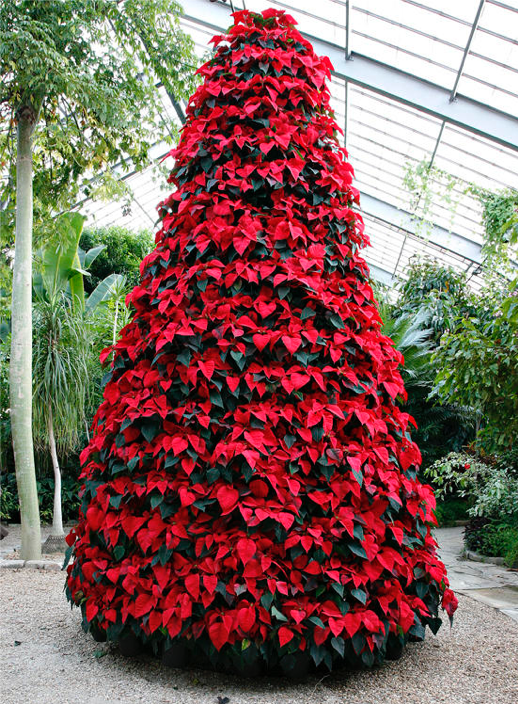Plant Description:
It withstands rise temperatures to 45 degrees Celsius, but not frost. It also has moderate tolerance to drought, wind and salinity, and is suitable for deep well-drained soil, and is vulnerable to Aphidoidea.
Plant name: Myoporum serratum
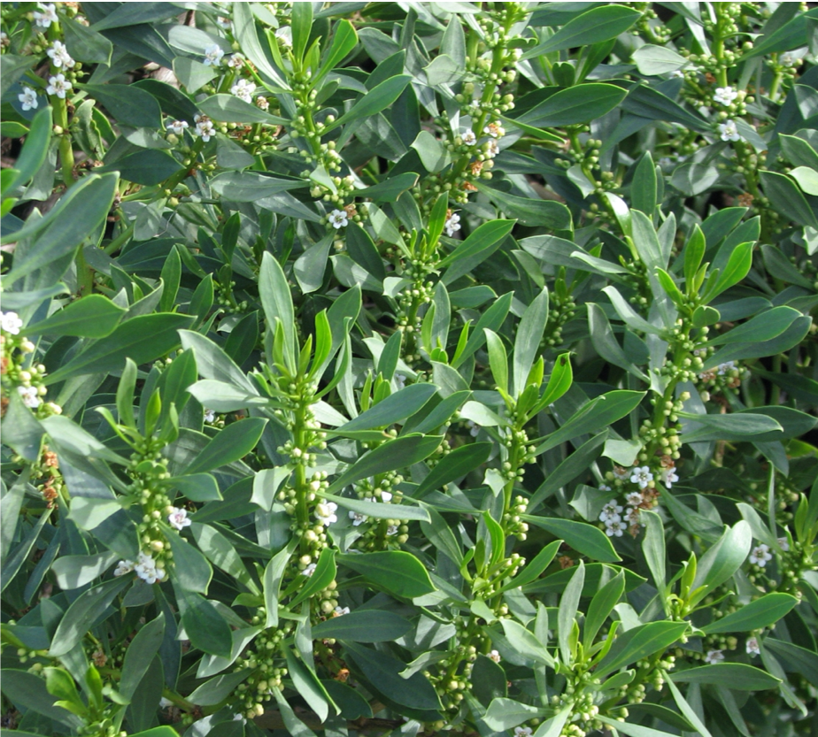Plant Description:
It withstands extreme environmental factors in terms of temperature rise to 47 degrees Celsius but not frost. It also withstands drought, wind and salinity.
Plant name: Myrtus communis
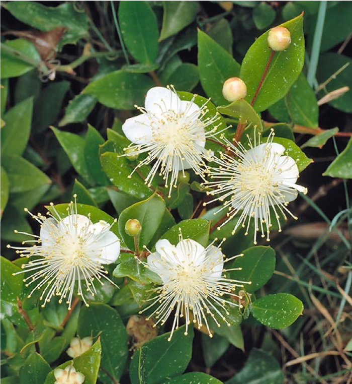Plant Description:
It withstands extreme environmental factors in terms of temperature rise to 40 degrees Celsius, but not frost. It also withstand drought and wind well, but has low tolerance for salinity. It is suitable for deep well-drained loamy soil. It is vulnerable to Aphidoidea and Coccoidea.
Plant name: Nerium oleander
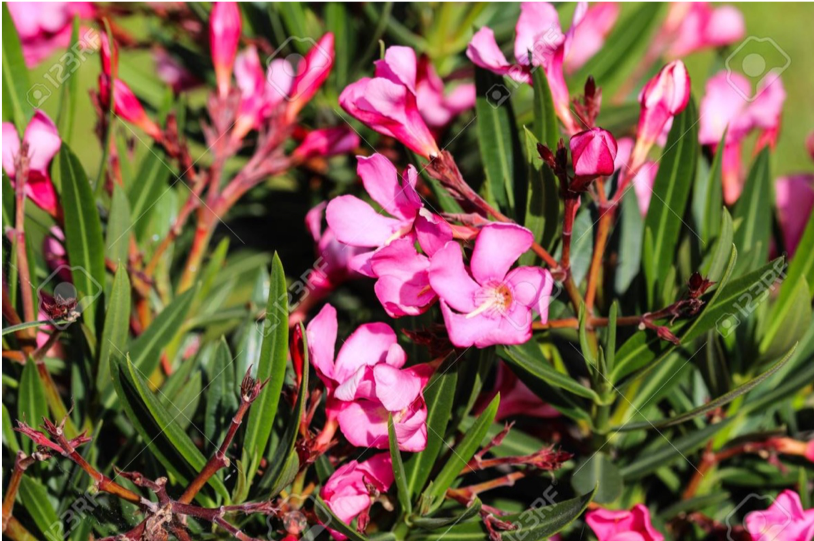
Plant Description:
It withstands extreme environmental factors in terms of temperature rise to 47 degrees Celsius, as well as drought, wind and salinity. It is vulnerable to aphids, Coccoidea, leaf-eating Insecta and Araneae.
Plant name: Ipomea palmata ( I. Pes-caprae )
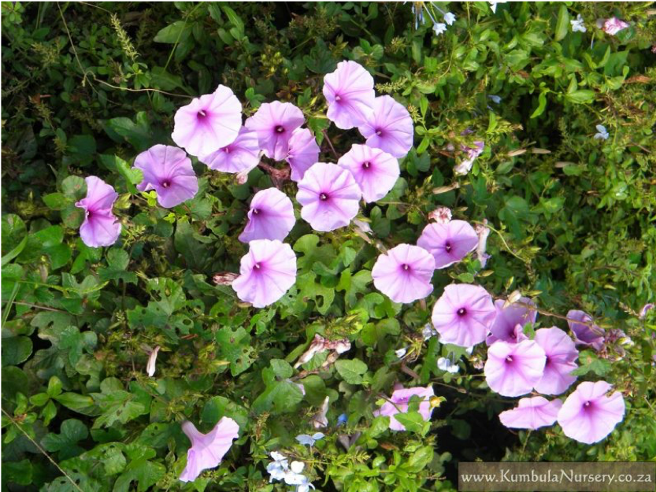Plant Description:
It withstands extreme environmental factors in terms of temperature rise to 47 degrees Celsius, wind and salinity. It has low tolerance for drought . The shrub is also vulnerable to diseases and Coccoidea.